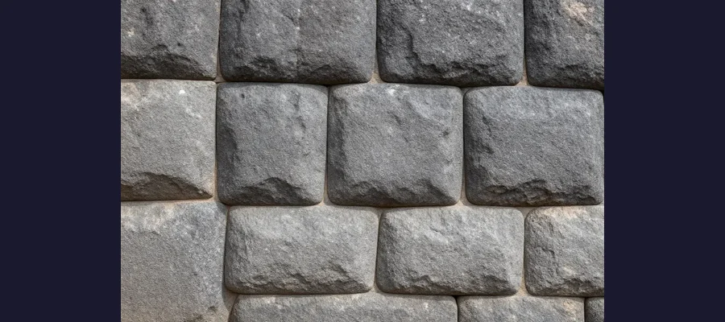
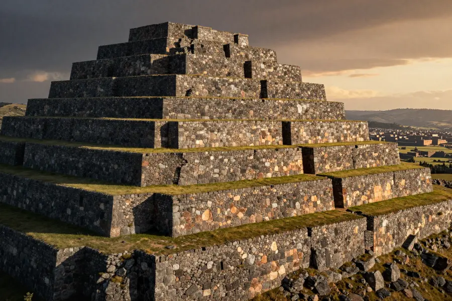

Sacsayhuamán: The Inca Fortress Built With Impossible Stones

Sacsayhuaman - stone blocks weighing up to 200 tons fitted together without mortar!
Imagine lifting stone blocks that weigh as much as 200 cars — without cranes, wheels, or modern tools. Now imagine fitting them together so perfectly that not even a sheet of paper can slide between the joints. That's exactly what the builders of Sacsayhuamán accomplished high in the Andes Mountains of Peru.
Perched above the ancient Inca capital of Cusco, this massive fortress features some of the largest stones ever used in construction. And nobody is entirely sure how they did it.
Overview
A Fortress of Giants
Sacsayhuamán (pronounced sak-sa-wa-man) is a walled complex built by the Inca civilization sometime before the Spanish conquest in the 1500s. The site sits at an elevation of over 12,000 feet above sea level.
The most impressive feature is the massive zigzag walls made from enormous stone blocks. The largest stones weigh between 100 and 200 tons each. For comparison, a typical car weighs about 2 tons — these stones weigh as much as 100 cars!

The stones fit so precisely that not even a sheet of paper can fit between them!
🪨 No Mortar Needed
The stones were cut with such precision that they lock together like a giant puzzle. This dry-stone technique has helped the walls survive centuries of earthquakes — while Spanish colonial buildings built nearby have collapsed!
Evidence
A useful way to read this evidence is by confidence level. High-confidence points are independently confirmed by multiple sources; medium-confidence points are plausible but debated; low-confidence points stay provisional until stronger data appears.
Archaeological and engineering work on Sacsayhuamán is strongest when physical evidence, colonial-era documents, and modern analysis converge. This layered approach helps separate observations from later interpretations.
What We Know For Sure
Carbon dating and historical records suggest construction began in the 15th century under the Inca emperor Pachacuti, though some researchers believe earlier civilizations may have laid the foundations.
- 🏗️ Over 20,000 workers were reportedly involved in construction
- 📐 Stones were shaped using harder stones as hammer tools
- 🏔️ Blocks were transported from quarries over 20 miles away
- ⏱️ Construction may have taken over 60 years
Spanish conquistadors were so amazed by the fortress that they initially believed it must have been built by demons or giants. The chronicler Garcilaso de la Vega wrote that the stones were so enormous that "it is impossible to conceive how they were placed."
Competing Explanations
Competing explanations usually persist because each one fits part of the evidence while missing another part. Researchers test these models against chronology, physical constraints, and independent documentation to identify which interpretation requires the fewest assumptions.
How Were the Stones Moved?

The zigzag walls stretch over 1,200 feet and use an estimated 100,000 cubic meters of stone!
The conventional explanation is that the Inca used thousands of workers pulling the stones on log rollers and earthen ramps. Experiments have shown that even large stones can be moved this way with enough people.
However, some researchers question this explanation. The quarries were located across rugged mountain terrain at high altitude, where the air is thin and physical labor is exhausting. Some alternative theories suggest the use of levers and tilt-lift techniques or even that earlier, unknown civilizations may have laid the groundwork.
⚡ Earthquake Survivors
The interlocking stone technique used at Sacsayhuamán is so effective that modern engineers study it to improve earthquake-resistant construction. The walls have survived over 500 years of seismic activity!
Open Questions
Open questions remain because source quality is uneven across time: some records are direct and detailed, while others are fragmentary or second-hand. Future archival discoveries, improved imaging, and more precise dating methods may refine conclusions without overturning well-supported core findings.
Mysteries That Endure
Despite extensive research, several questions remain unanswered. How exactly were the massive stones shaped with such precision using only stone tools? How did workers transport 200-ton blocks across mountainous terrain?
And perhaps most intriguingly: how much of Sacsayhuamán was actually built by the Inca, and how much predates them? Some of the largest and most precisely fitted stones show tool marks and techniques that differ from typical Inca stonework.
Sacsayhuamán stands as proof that ancient engineering could rival anything we can build today!
📖 Recommended Reading
Want to learn more? Check out The Saqsaywaman Mystery: Reopening a Most Curious Case of Andean Archaeology on Amazon for a deeper dive into this fascinating topic. (As an Amazon Associate, we earn from qualifying purchases.)
References & Further Reading
- Britannica reference on Sacsayhuaman
- Ancient Origins analysis of Sacsayhuaman stonework
- Smithsonian Magazine feature on Sacsayhuaman
- World Archaeology guide to the fortress above Cusco
- Google Scholar literature search
Editorial note: reconstructions are continuously revised as imaging and inscription studies improve. See our Editorial Policy.